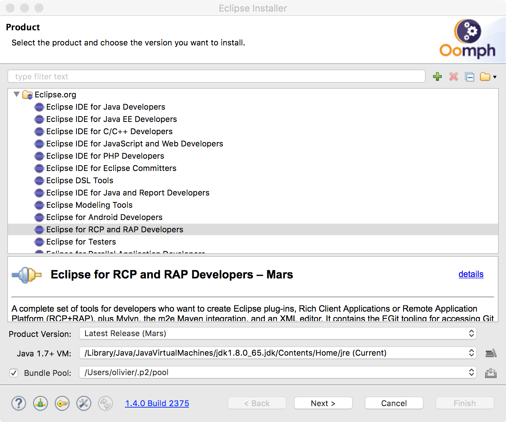
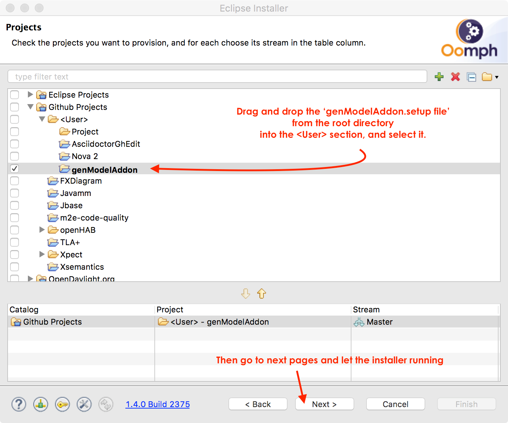

What is GenModel Addon ?
This project will help you to separate properly the EMF generated code and your developed code.
How does it work ?
When you generate the EMF code, you probably override it with the @generated annotation. This is correct but generated and developed code are mixed. It is better to separate both. This projet will generate this structure with the appropriate factory_override extension :
How to use it ?
Upload the zipped update site 1.6.0, install it in your Eclipse and restart.
Open a genmodel file and right click on it. A generation menu will appear :
Then enter the values expected in the dialog and generate :
You will get in the 'dev source directory' all interfaces and classes that extend the default generation. The 'override_factory' extension point is also extended and initialized with the correct factory.
Don't forget to reorganize imports on source folders
In your code use now your specific factory using the eINSTANCE on the new Interface :
// MProjectFactory is the generated factory. It was used like this :
MProjectFactory mfactory = MProjectFactory.eINSTANCE;
MTask mt = mfactory.createTask();
// Now the ProjectFactory extends the MProjectFactory and
// creates instances of the developer objects. You can get it directly like this :
ProjectFactory factory = ProjectFactory.eINSTANCE;
Task t = factory.createTask();
How to contribute ?
- Download the OOmph installer for your platform and launch it.
- In the top right menu, select 'Advanced Mode'
- Then select the Eclipse for RCP and RAP developpers and then click next:
 - In the second page, drag and drop the genModelAddon.setup file in the <User> part, select it and finish the wizard.
 - You will get a full eclipse install with all projects uploaded in your workspace and you will be able to launch the TestIGenModelAddon configuration to run the tests.
- Register to the OPCoach team here
- add the #genmodeladdon channel to your favorite channels
How to get information or discuss on the project ?
There is a slack channel !